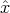
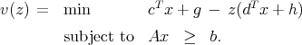
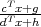
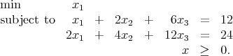
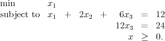

Solution:
Assume  is an optimal solution that is not a BFS. Then there exists y≠0 with Ay = 0 and yj = 0 if xj = 0. By construction, there exists scalar θ > 0 with both ± θy feasible. If cT y≠0 then either + θy or - θy has objective function value lower than that of , so is not optimal, a contradiction.
So we must have cT y = 0. Without loss of generality, we can assume y has at least one
negative component. Then there exists a step length  such that + y is feasible and
has strictly smaller support than . Since cT y = 0, this point is also optimal.
such that + y is feasible and
has strictly smaller support than . Since cT y = 0, this point is also optimal.
We can proceed iteratively in this manner until we obtain an optimal BFS.
has an optimal value in the range [α,β]. In addition, assume that any x satisfying Ax ≥ b also satisfies dT x + h > 0. Develop a procedure that uses linear programming as a subroutine to find the optimal value of the fractional linear program, to within any desired tolerance. (Hint: Consider the problem of determining whether the optimal value is above or below a given threshold τ.)
Solution:
We have an algorithm:
- 0. Initialize:
- Set l = α, u = β, z = 0.5(u + l). Set tolerance ϵ
- 1. Determine if z is a lower bound on the optimal value:
- Let
 - 2. Break into cases
- :
If v(z) > 0 then update l ← z, z ← 0.5(u + l), else update u ← z, z ← 0.5(u + l). - 3. Loop or terminate
- :
If u - l < ϵ, STOP. Else, loop back to Step 1.
This binary search algorithm works, because the fractional LP has optimal value strictly larger than z if and only if  > z for all feasible x, which is equivalent to stating that cT x + g > z(dT x + h) for all feasible x since dT x + h > 0, which is equivalent to stating that v(z) > 0.
Note that it is not enough to just try minimizing cT x or maximizing dT x, as shown by the following example which has optimal solution x = (2, 2):
A fractional LP may have a finite optimal value, yet not achieve that value, as in the next example in just one variable:
Note also that we could solve the problem using a change of variables. In particular, define
and solve the problem
The optimal value of this problem is equal to the optimal value of the original problem. If the optimal solution (z*,t*) to this new problem has t* > 0 then we can recover an optimal solution to the original problem by setting x = z*∕t*. If the optimal solution has t* = 0 then there is no optimal solution to the original problem; the optimal value is only approached asymptotically.
One final observation about this problem: the objective function is monotonic on straight lines, so consequently if there is an optimal solution then there is a BFS that is optimal.
The point x = (1, 4, 0, 0, 0)T is a basic feasible solution for this problem. Find all the bases corresponding to this bfs. Use complementary slackness to show that this point is optimal.
Solution:
Any basis consists of three columns. This set of three columns must include the first two columns since x1 > 0 and x2 > 0. The first three columns are linearly dependent so they don’t give a basis. The other two choices are valid, namely the sets of columns {1, 2, 4} and {1, 2, 5}.
The dual problem is
From complementary slackness, we must have s1 = s2 = 0, giving y1 = 1, y2 = 0. This in turn forces s3 = 0. The nonnegativity requirements on s4 and s5 are satisfied provided -2 ≤ y3 ≤ 0. Since there are feasible dual solutions satisfying complementary slackness, the given primal solution is optimal.
Here, A IRm×n, the dimensions of x, c, and b are defined appropriately, and 1 ≤ m ≤ n = 3. The first row of the system Ax = b is the constraint x1 + 2x2 + 6x3 = 12. Let K be the feasible region of (P).
- Construct a linear programming problem of the form (P) with dim(K) > n - m.
- Construct a feasible linear programming problem of the form (P) with dim(K) < n - m, b > 0, and rank(A) = m.
- In part (b), the linear program you defined has a degenerate basic feasible solution. What are the bases associated with that bfs?
Solution:
- n = 3, m = 2, dim(K) = 2 > n - m:
 - n = 3, m = 2, dim(K) = 0 < n - m, rank(A) = 2:
 - The only feasible solution is x = (0, 0, 2). Any basis has two basic variables. The bases consist of the sets of columns {1, 3} and {2, 3}.
Solution:
Assume ≠0 is an extreme point of the cone, which we designate as K. Then x1 := 0.5 and x2 := 1.5 are two distinct points in K, since it is a cone. We have = 0.5x1 + 0.5x2 so is not an extreme point. So the only possible extreme point is the origin.
Any subspace is a convex cone without an extreme point. So for example we can take IRn for any finite positive n.
System 1: Ax < 0, Bx = 0 for some x IRn.
System 2: AT u + BT v = 0 for some u IRp, v IRq, with u ≥ 0 and u≠0.
Solution:
Consider the primal-dual pair of linear programs
where e denotes the vector of ones.
Note that any feasible solution to (D) can be scaled to give a feasible solution to System 1, and any feasible solution to System 1 is feasible in (D).
Assume System 2 has a solution: Then (P) is feasible with objective value < 0. By duality, (D) is infeasible. Hence System 2 is inconsistent. Thus, at most one of the systems has a solution.
Assume System 2 does not have a solution: Then any feasible solution to (P) has u = 0, so (P) has optimal value 0. By duality, (D) is feasible with optimal value 0. Hence, System 1 is consistent. Thus, at least one of the systems has a solution.
So exactly one of the two systems is consistent.